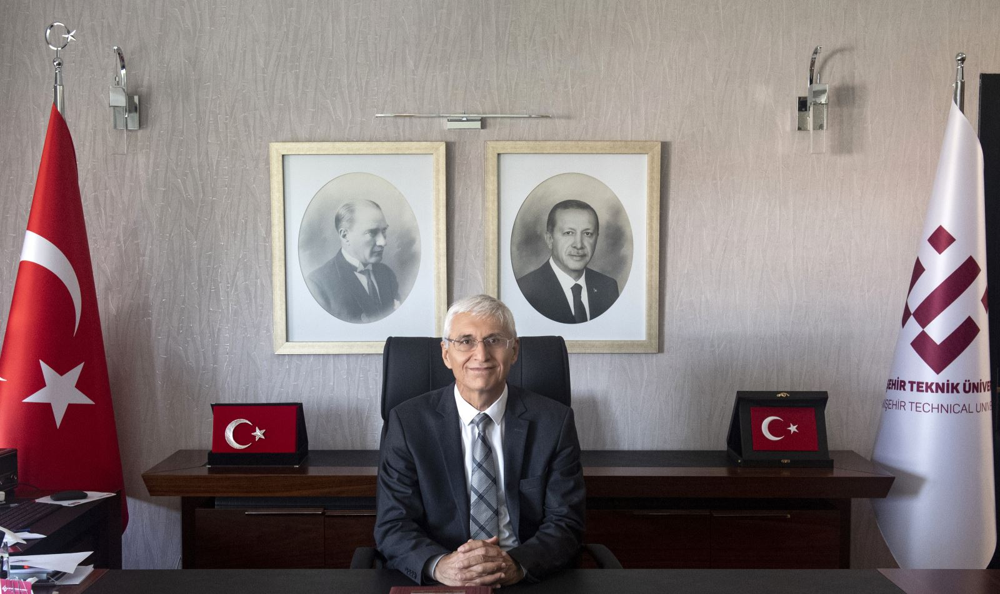

Prof. ÖZCAN, 31/12/2013-18/05/2018 tarihleri arasında Anadolu Üniversitesinde Eğitim- Öğretim, Kalite Güvencesi Süreçleri ve Uluslararası İlişkilerden sorumlu Rektör Yardımcısı olarak görev yapmıştır. Prof. Dr. Adnan ÖZCAN ayrıca Haziran 2018-Eylül 2018 arasında Eskişehir Teknik Üniversitesinin tedviren Rektör yardımcılığı görevini de yürütmüştür. Prof. ÖZCAN, Yükseköğretim Kalite Kurulunda akademik değerlendirici olarak, ayrıca Yükseköğretim Kurulunda “Yükseköğretim Kurulu Diploma Eki Çalışma Grubunda da üye olarak görev yapmıştır. Eskişehir Teknik Üniversitesi Fen Fakültesi Kimya Bölümü Analitik Kimya Bilim Dalı öğretim üyesi olan Prof. Dr. Adnan ÖZCAN’ın bilimsel çalışmaları; adsorpsiyon, biyosorpsiyon, süperkritik ortamda su kullanmadan tekstil kumaşlarının boyarmaddelerle boyanması, süperkritik ekstraksiyon, nano boyutta adsorban üretimi ve karakterizasyonu, hibrit adsorban üretimi, kirlilik giderimi, killerin immobilizasyonu ve modifikasyonudur. Bu alanlarda 52’si SCI (Science Citation Index) kapsamındaki dergilerde olmak üzere toplam 54 adet bilimsel makalesi, kongre /çalıştay /sempozyumlarda sözlü veya poster olarak sunulmuş 43 bildirisi, ulusal ve uluslararası kongrelerde oturum başkanlığı ve bilim kurulu üyelikleri, SCI’ce taranan dergilerden 100’ün üzerinde hakemliği, 11 adet tamamlanmış ulusal projesi, yurt dışında bir adet kitap bölümü yazarlığı, yurt içinde 1 adet kitap editörlüğü ve 7 adet kitap bölümü yazarlığı bulunmaktadır. Prof. ÖZCAN’ ın eserlerine toplam 5 bin 437 kez atıf yapılmış, bilimsel makalelerinin makale başına atıf sayısı 104,56’dır. Dünyadaki tüm bilim insanlarının eserlerinin değerlendirildiği “h-index” faktörü 32‘dir. Prof. Dr. Adnan ÖZCAN, 4 yüksek lisans ve 2 doktora öğrencisi yetiştirmiş ve 2 doktora öğrencisinin ikinci danışmanlığını yapmıştır. Kimya alanında birçok ders vererek eğitim- öğretime de katkı sağlamıştır. Prof. Dr. Adnan ÖZCAN, özellikle “süperkritik ortamda su kullanmadan boyama ve adsorpsiyon yöntemiyle kirlilik giderimi” alanlarındaki çalışmaları nedeniyle 2010 yılında Anadolu Üniversitesinin en prestijli ödülü olan “Bilim ve Teknoloji Ödülü”nü almıştır. Prof. ÖZCAN ’ın ayrıca yurt dışından, çalıştığı bilimsel alanda almış olduğu iki adet ödülü de bulunmaktadır.

Hakkımızda
18 Mayıs 2018 tarih ve 30425 sayılı Resmî Gazete’de yayımlanan 7141 sayılı Kanun ile kurulan Eskişehir Teknik Üniversitesi, bilim, kültür ve aynı zamanda bir gençlik kenti olan Eskişehir’in merkezinde yer alan 3 yerleşkede 5 Fakülte, 2 Meslek Yüksekokulu, 1 Yüksekokul ve 3 Enstitü ve 6 Araştırma ve Uygulama Merkezi’nden oluşmaktadır. Eskişehir Teknik Üniversitesi, eğitim öğretim ve araştırma faaliyetlerini yürüttüğü güçlü altyapıya sahip birimlerinde, her biri alanındaki gelişmeleri takip eden ve tüm zamanını öğrencileriyle paylaşan yetkin öğretim kadrosuyla, öğrencilerini yaratıcı ve dinamik eğitim ortamlarında, geleceğe en donanımlı ve rekabet edebilir bireyler olarak hazırlamak üzere çalışmaktadır. Üniversitemiz 2 Eylül Yerleşkesinde bulunan uluslararası Hasan Polatkan Havalimanının işletmesi Havacılık ve Uzay Bilimleri Fakültemiz tarafından yürütülmektedir. Hasan Polatkan Havalimanına haftanın çeşitli günlerinde farklı havayolu şirketleri tarafından gerçekleştirilen uluslararası uçuşlar bulunmaktadır.
Rektör
Prof. Dr. Adnan ÖZCAN
Prof. Dr. Adnan ÖZCAN, 1987 yılında Lisans, 1990 yılında Yüksek Lisans ve 1997 yılında Doktora derecelerini Anadolu Üniversitesinden almıştır. 1990-1997 yılları arasında Anadolu ve Osmangazi Üniversitelerinde çalışmış, 1993-1995 yılları arasında İngiltere Leeds Üniversitesinde misafir araştırmacı olarak bulunmuş ve 1997-2005 yılları arasında Anadolu Üniversitesinde yardımcı doçent olarak görev yapmıştır. 2005 yılında Anadolu Üniversitesi Fen Fakültesi Kimya Bölümü Analitik Kimya Anabilim dalına Doçent olarak atanan Prof. ÖZCAN, 2010 yılında da aynı bölümde ve anabilim dalında Profesörlüğe yükseltilerek atanmış ve halen bu görevini Eskişehir Teknik Üniversitesinde sürdürmektedir...
Gazipaşa Mahallesi, Eskişehir Teknik Üniversitesi İki Eylül Kampüsü 26555, Tepebaşı/ESKİŞEHİR
+90 222 213 77 77
info@eskisehir.edu.tr
2024 © Tüm hakları saklıdır. Eskişehir Teknik Üniversitesi